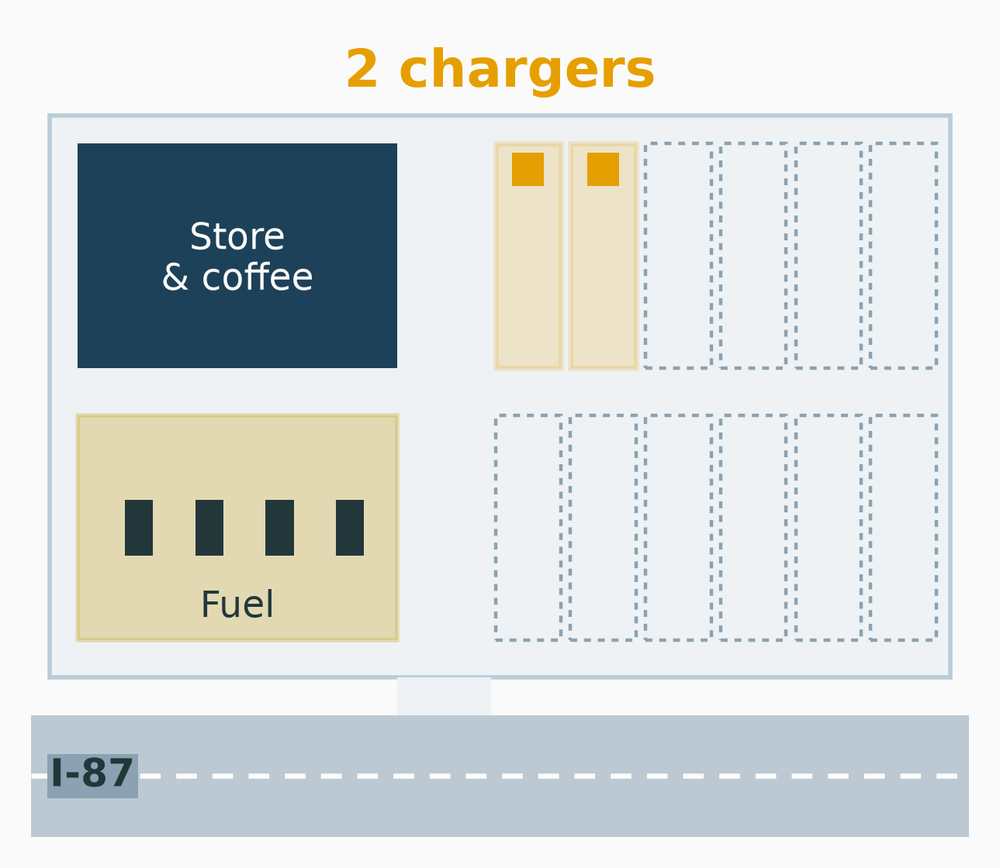
Decisions under Uncertainty and the Value of Information
MGMT 4100 Fall 2026
\[ \newcommand{\argmax}{\operatorname*{argmax}} \newcommand{\argmin}{\operatorname*{argmin}} \newcommand{\E}{\operatorname{\mathbb{E}}} \newcommand{\Var}{\operatorname{Var}} \newcommand{\Cov}{\operatorname{Cov}} \newcommand{\Corr}{\operatorname{Corr}} \newcommand{\plim}{\operatorname{plim}} \newcommand{\tr}{\operatorname{tr}} \newcommand{\rank}{\operatorname{rank}} \newcommand{\N}{\mathcal{N}} \newcommand{\R}{\mathbb{R}} \newcommand{\iid}{\overset{\text{i.i.d.}}{\sim}} \newcommand{\inprob}{\xrightarrow{\;p\;}} \newcommand{\indist}{\xrightarrow{\;d\;}} \newcommand{\eps}{\varepsilon} \newcommand{\bm}[1]{\boldsymbol{#1}} \]
Hudson Service Plaza (a fictional business) sits on I-87 north of Albany: fuel, a convenience store, a coffee counter. The owner must order fast chargers for electric vehicles now, before anyone knows how fast drivers on this corridor will switch to electric.

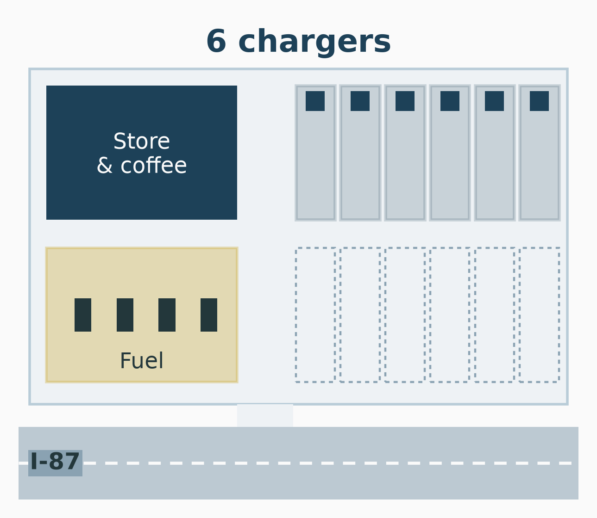
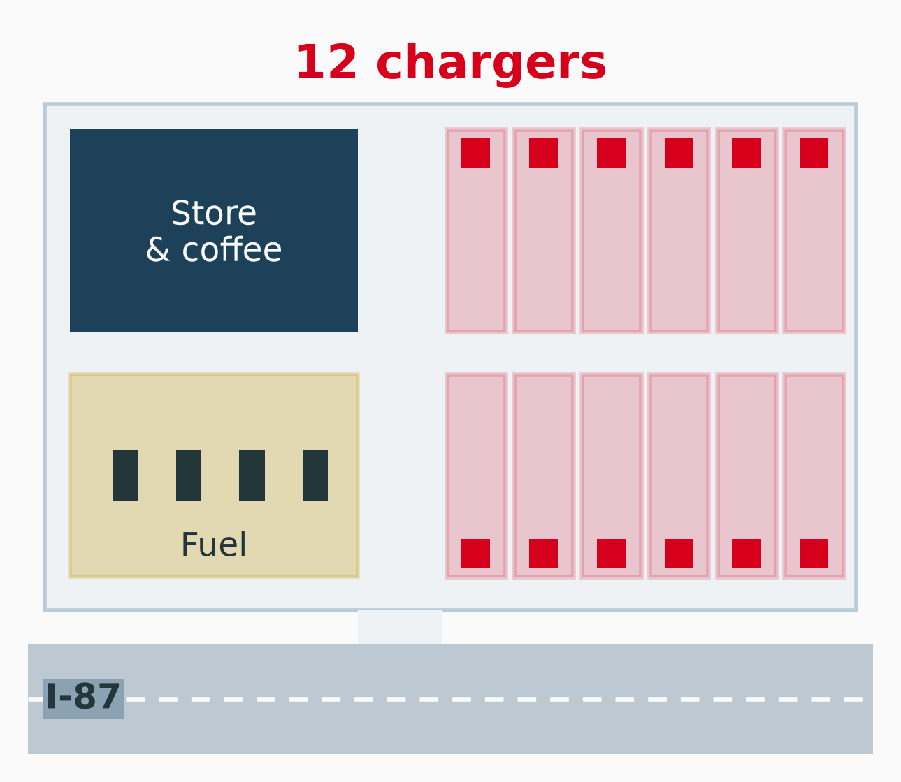
Annual profit depends on the row she picks and on how fast drivers switch to electric:
| Annual profit, $000 | Slow adoption | Moderate | Fast |
|---|---|---|---|
| 2 chargers | 40 | 60 | 70 |
| 6 chargers | 10 | 110 | 160 |
| 12 chargers | −70 | 100 | 260 |
Decision
Which alternative, and on what grounds?
What the owner controls
She does not control the state of nature.
No alternative wins every scenario
Each alternative is best in one state. That is why the choice needs a rule. Different rules may lead to different choices and disagree.
Without probabilities, a criterion is an attitude toward the unknown state.
| Criterion | Attitude | Pick the row with the |
|---|---|---|
| Maximax | Optimist | largest best payoff |
| Maximin | Pessimist | largest worst payoff |
| Minimax regret | Fears hindsight | smallest largest regret |
| Hurwicz | Weighted optimist | largest mix of best, worst |
| Equal likelihood | Neutral | largest average payoff |
Find each row’s best payoff, then pick the largest of them.
| Annual profit, $000 | Slow | Moderate | Fast | Row maximum |
|---|---|---|---|---|
| 2 chargers | 40 | 60 | 70 | 70 |
| 6 chargers | 10 | 110 | 160 | 160 |
| 12 chargers | −70 | 100 | 260 | 260 |
Maximax picks 12 chargers. It looks only at the fast column and ignores the −70.
Find each row’s worst payoff, then pick the largest of them.
| Annual profit, $000 | Slow | Moderate | Fast | Row minimum |
|---|---|---|---|---|
| 2 chargers | 40 | 60 | 70 | 40 |
| 6 chargers | 10 | 110 | 160 | 10 |
| 12 chargers | −70 | 100 | 260 | −70 |
Maximin picks 2 chargers. It guarantees 40 and gives up everything above 70.
Regret is what a choice costs you once the state is known: the best payoff in that column minus the payoff you got.
| Payoff | Slow | Mod. | Fast |
|---|---|---|---|
| 2 chargers | 40 | 60 | 70 |
| 6 chargers | 10 | 110 | 160 |
| 12 chargers | −70 | 100 | 260 |
| Column best | 40 | 110 | 260 |
| Regret | Slow | Mod. | Fast |
|---|---|---|---|
| 2 chargers | 0 (40 − 40) | 50 (110 − 60) | 190 (260 − 70) |
| 6 chargers | 30 (40 − 10) | 0 (110 − 110) | 100 (260 − 160) |
| 12 chargers | 110 (40 − (−70)) | 10 (110 − 100) | 0 (260 − 260) |
Fast column: \(260 - 70 = 190\), \(\;260 - 160 = 100\), \(\;260 - 260 = 0\).
Slow column: \(40 - 40 = 0\), \(\;40 - 10 = 30\), \(\;40 - (-70) = 110\).
Find each row’s largest regret, then pick the smallest of them.
| Regret, $000 | Slow | Moderate | Fast | Maximum regret |
|---|---|---|---|---|
| 2 chargers | 0 | 50 | 190 | 190 |
| 6 chargers | 30 | 0 | 100 | 100 |
| 12 chargers | 110 | 10 | 0 | 110 |
Minimax regret picks 6 chargers. Whatever happens, the owner will regret at most 100.
Choose a coefficient of optimism \(\alpha\) between 0 and 1, then score each row:
\[ H = \alpha \cdot (\text{best payoff}) + (1 - \alpha) \cdot (\text{worst payoff}) \]
With \(\alpha = 0.6\):
\[ \begin{array}{r@{\quad}l} \text{2 chargers:} & 0.6(70) + 0.4(40) = 58 \\ \text{6 chargers:} & 0.6(160) + 0.4(10) = 100 \\ \text{12 chargers:} & 0.6(260) + 0.4(-70) = \textcolor{#D6001C}{\mathbf{128}} \end{array} \]
Hurwicz at \(\alpha = 0.6\) picks 12 chargers. At \(\alpha = 1\) it is maximax; at \(\alpha = 0\) it is maximin.
Where two lines cross, the choice flips: \(10 + 150\alpha = -70 + 330\alpha\) at \(\alpha = 80/180 = 0.444\).
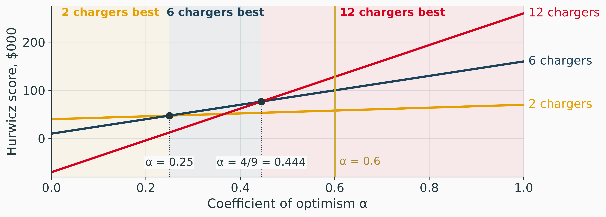
Treat every state as equally likely and take each row’s average:
\[ \begin{array}{r@{\quad}l} \text{2 chargers:} & (40 + 60 + 70)/3 = 56.7 \\ \text{6 chargers:} & (10 + 110 + 160)/3 = 93.3 \\ \text{12 chargers:} & (-70 + 100 + 260)/3 = \textcolor{#D6001C}{\mathbf{96.7}} \end{array} \]
Equal likelihood picks 12 chargers, by 3.4 over 6 chargers.
Equal is an assumption
“I don’t know” is not the same as “each is one in three”. Equal likelihood quietly puts a probability of 1/3 on fast adoption.
An alternative is dominated when another is at least as good in every state and better in one. Drop it before applying any criterion.
Dominated alternatives never win
Under every criterion, and under any probabilities, a dominated alternative scores no better than the one that dominates it. Removing it first shrinks the table and changes no answer.
| Criterion | Choice | Value |
|---|---|---|
| Maximax | 12 chargers | 260 |
| Maximin | 2 chargers | 40 |
| Minimax regret | 6 chargers | 100 |
| Hurwicz, \(\alpha = 0.6\) | 12 chargers | 128 |
| Equal likelihood | 12 chargers | 96.7 |
Disagreement is information
12 chargers wins only for an owner who leans optimistic. 2 chargers wins only for one who fears the worst. 6 chargers is never far from best (its largest regret is 100). The next step is to say how likely each state is.
Download Decision_Analysis.xlsx and open the Criteria sheet
The payoff table is in B5:D7 and every criterion is a formula beside it: row maximum, row minimum, Hurwicz, average, maximum regret. The regret table is B14:D16, and B20:C24 names each criterion’s choice.
Try this
The owner’s forecast, from state electric-vehicle registrations and the utility’s corridor study:
| Slow | Moderate | Fast | |
|---|---|---|---|
| Probability | 0.3 | 0.5 | 0.2 |
The expected value (EV) of an alternative weights each payoff by the probability of its state:
\[ EV(a) = \sum_{j} P(s_j)\, x_{a j} \]
where \(x_{aj}\) is the payoff of alternative \(a\) in state \(s_j\).
\[ \begin{array}{r@{\quad}l} \text{2 chargers:} & 0.3(40) + 0.5(60) + 0.2(70) = 12 + 30 + 14 = 56 \\ \text{6 chargers:} & 0.3(10) + 0.5(110) + 0.2(160) = 3 + 55 + 32 = \textcolor{#D6001C}{\mathbf{90}} \\ \text{12 chargers:} & 0.3(-70) + 0.5(100) + 0.2(260) = -21 + 50 + 52 = 81 \end{array} \]
Expected value picks 6 chargers, worth 90 a year on average.
The expected value criterion
Pick the alternative with the largest expected value. It is the rule this deck uses from here on.
Why firms use it anyway
A company makes many such decisions. Gains and losses across them average out, and the rule that maximizes the average maximizes the total. Part II asks what changes when one bet is large enough to hurt.
The expected opportunity loss (EOL) weights the regret table by the same probabilities:
\[ \begin{array}{r@{\quad}l} \text{2 chargers:} & 0.3(0) + 0.5(50) + 0.2(190) = 63 \\ \text{6 chargers:} & 0.3(30) + 0.5(0) + 0.2(100) = \textcolor{#D6001C}{\mathbf{29}} \\ \text{12 chargers:} & 0.3(110) + 0.5(10) + 0.2(0) = 38 \end{array} \]
The smallest EOL picks 6 chargers, as EV did. It always will: EV and EOL rank the alternatives in opposite order, so they always agree on the choice.
Suppose a forecaster could tell the owner the state before she orders. She would pick the best row in each column:
| Slow (0.3) | Moderate (0.5) | Fast (0.2) | |
|---|---|---|---|
| Best alternative | 2 chargers | 6 chargers | 12 chargers |
| Payoff | 40 | 110 | 260 |
Before hearing the forecast, its expected value is
\[ EV \text{ with perfect information} = 0.3(40) + 0.5(110) + 0.2(260) = 12 + 55 + 52 = 119 \]
The expected value of perfect information (EVPI) is what knowing the state in advance adds:
\[ EVPI = EV \text{ with perfect information} - EV \text{ without it} = 119 - 90 = \textcolor{#D6001C}{\mathbf{29}} \]
EVPI is a ceiling
No forecast, study or predictive model can be worth more than $29,000 a year to this decision. Anyone selling information for more is overcharging. Part II prices a real, imperfect study against this ceiling.
For any alternative \(a\), its expected regret is the gap between the perfect-information payoff and its own:
\[ EOL(a) = \sum_j P(s_j)\,\big(\max_b x_{bj} - x_{aj}\big) = 119 - EV(a) \]
The alternative with the largest EV has the smallest EOL, and that EOL is EVPI.
Drag P(fast). Slow and moderate share the rest 3 to 5, as in the forecast. The gold bar is EVPI.
// Every EV is a line in p = P(fast): a + b p, with a the slow-and-moderate
// part and b what fast adds over it.
evModel = {
const line = (row) => {
const a = evp.split[0] * row[0] + evp.split[1] * row[1];
return {a, b: row[2] - a};
};
const lines = evp.pay.map((row, i) => ({name: evp.alts[i], color: evp.colors[i], ...line(row)}));
const best = [0, 1, 2].map(j => d3.max(evp.pay, r => r[j]));
const pi = line(best);
const at = (l, p) => l.a + l.b * p;
const top = (p) => d3.max(lines, l => at(l, p));
const cross = [];
for (let i = 0; i < 3; i++)
for (let j = i + 1; j < 3; j++) {
const p = (lines[j].a - lines[i].a) / (lines[i].b - lines[j].b);
if (p < 0 || p > 1) continue;
const v = at(lines[i], p);
cross.push({p, v, switch: Math.abs(v - top(p)) < 1e-9,
label: `${lines[i].name.split(" ")[0]} = ${lines[j].name.split(" ")[0]} at ${p.toFixed(3)}`});
}
return {lines, pi, at, top, cross};
}evNow = {
const p = pFast;
const ev = evModel.lines.map(l => ({name: l.name, color: l.color, p, v: evModel.at(l, p)}));
const best = ev.reduce((m, e) => e.v > m.v ? e : m);
const pi = evModel.at(evModel.pi, p);
const probs = [evp.split[0] * (1 - p), evp.split[1] * (1 - p), p];
return {p, ev, best, pi, evpi: pi - best.v, probs};
}Plot.plot({
...frame,
x: {label: "P(fast) →", domain: [0, 1], grid: true},
y: {label: "↑ Expected value, $000", domain: [0, 270], grid: true},
marks: [
// The perfect-information line, dashed: EVPI is its gap to the top line.
Plot.line([0, 1].map(p => ({p, v: evModel.at(evModel.pi, p)})),
{x: "p", y: "v", stroke: rpi.ink, strokeDasharray: "6 4", strokeWidth: 1.4}),
// Labelled mid-line, above it: at the right end it overprinted the
// 12-charger label, both lines ending at 260 [observed].
Plot.text([{p: 0.45, v: evModel.at(evModel.pi, 0.45)}],
{x: "p", y: "v", text: () => "EV with perfect information", dy: -12,
rotate: 0, textAnchor: "end", fill: rpi.ink, fontSize: 12,
stroke: rpi.paper, strokeWidth: 4, paintOrder: "stroke"}),
...evModel.lines.map(l => Plot.line([0, 1].map(p => ({p, v: evModel.at(l, p)})),
{x: "p", y: "v", stroke: l.color, strokeWidth: 2.6})),
// Direct labels at the right end, nudged apart where 2 and 6 meet.
Plot.text(evModel.lines.map((l, i) => ({p: 1, v: evModel.at(l, 1), name: l.name, color: l.color, i})),
{x: "p", y: "v", text: "name", fill: "color", dx: 8,
textAnchor: "start", fontSize: 13, fontWeight: 600}),
Plot.ruleX([pFast], {stroke: rpi.ink, strokeOpacity: 0.5}),
Plot.ruleX([{p: pFast, y1: evNow.best.v, y2: evNow.pi}],
{x: "p", y1: "y1", y2: "y2", stroke: rpi.gold, strokeWidth: 6}),
Plot.dot(evNow.ev, {x: "p", y: "v", r: 5, fill: "color"}),
Plot.dot(evModel.cross, {x: "p", y: "v", r: 7, stroke: rpi.ink, strokeWidth: 1.6,
fill: d => d.switch ? rpi.ink : "none"}),
Plot.text(evModel.cross.filter(d => d.switch), {x: "p", y: "v",
text: d => `switch at ${d.p.toFixed(3)}`, dy: 20, dx: 6, textAnchor: "start",
fill: rpi.ink, fontSize: 12, fontWeight: 600,
stroke: rpi.paper, strokeWidth: 4, paintOrder: "stroke"})
]
})htl.html`<div class="rpi-readout">
P = (${evNow.probs.map(v => v.toFixed(2)).join(", ")}) ·
EV: ${evNow.ev.map(e => htl.html`<span style="color:${e.color}">${e.name.split(" ")[0]} → ${e.v.toFixed(1)}</span>`).reduce((a, b) => htl.html`${a}, ${b}`)}
· best: <b>${evNow.best.name}</b>
· EVPI <b>${evNow.evpi.toFixed(1)}</b></div>`With \(p = P(\text{fast})\) and the rest split 3 to 5, \(P(\text{slow}) = 0.375(1 - p)\) and \(P(\text{moderate}) = 0.625(1 - p)\):
\[ \begin{aligned} EV_6(p) &= 0.375(1-p)(10) + 0.625(1-p)(110) + 160p = 72.5 + 87.5p \\ EV_{12}(p) &= 0.375(1-p)(-70) + 0.625(1-p)(100) + 260p = 36.25 + 223.75p \end{aligned} \]
\[ 72.5 + 87.5p = 36.25 + 223.75p \quad\Longrightarrow\quad p = \frac{36.25}{136.25} = 0.266 \]
A close call
The forecast says 0.2; the choice flips at 0.27. If the owner’s estimate of fast adoption could be off by seven points, the decision is fragile, and information has value.
Download Decision_Analysis.xlsx and open the EV sheet
The probabilities are inputs in B5:D5 (E5 checks that they sum to 1). EV and EOL for each alternative are in E8:F10, EV with perfect information in E16 and EVPI in E17. Payoffs and regrets are read from the Criteria sheet.
Try this
A decision tree draws the same decision in the order things happen, left to right.
Folding back
Work from right to left. At a circle, take the probability-weighted average of its branches. At a square, take the best branch and cut the others (//).
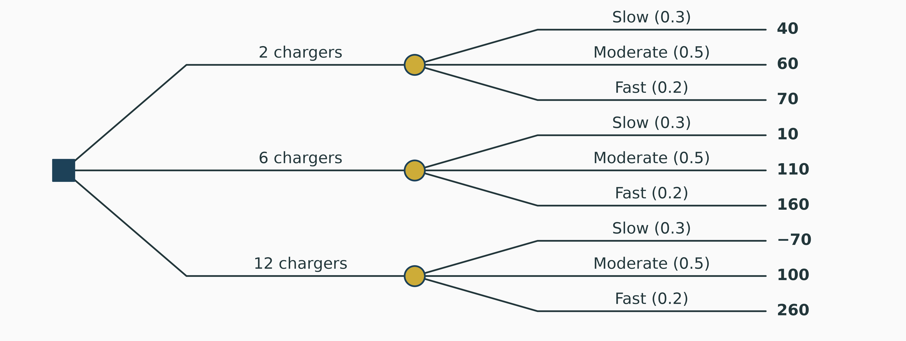
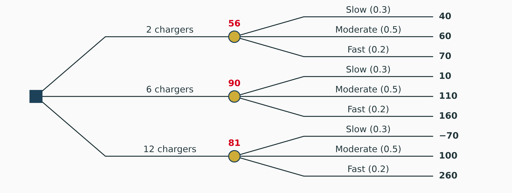
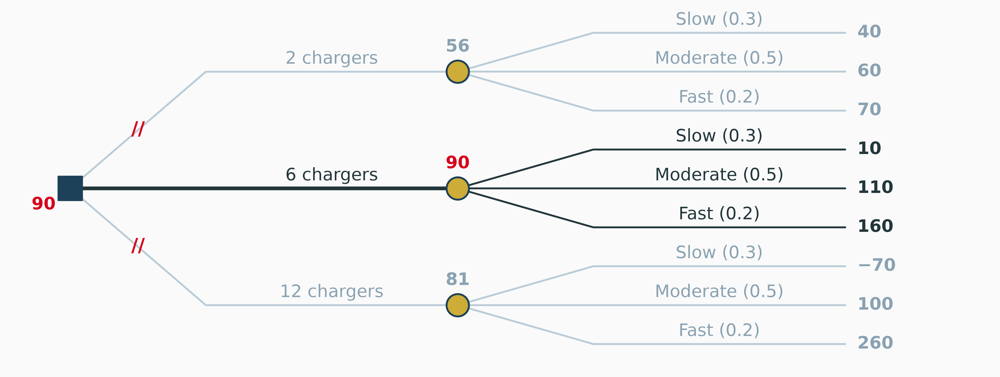
Circle: \(0.3(10) + 0.5(110) + 0.2(160) = 90\). Square: \(\max(56, 90, 81) = 90\).
Part II
A consultant offers the owner a market study for $8,000 before she orders the chargers. The tree is how we will decide whether to buy it.
The coffee counter
Hudson Service Plaza will sign a contract for its coffee counter for the coming year. Winter traffic on I-87 may be down, flat or up. Annual profit, $000:
| Coffee concept | Traffic down | Flat | Up |
|---|---|---|---|
| National franchise kiosk | 20 | 70 | 140 |
| Local roaster | 45 | 85 | 105 |
| Self-serve machines | 55 | 60 | 65 |
Determine the best concept by (a) maximax, (b) maximin, (c) equal likelihood and (d) expected value, with probabilities 0.25, 0.5 and 0.25. Then compute EVPI.
Work it by hand first; then check it by typing the table into the Criteria and EV sheets of Decision_Analysis.xlsx.
Core takeaways
Watch out for
Bottom line
Sequential Decisions and the Value of Information
| Annual profit, $000 | Slow (0.3) | Moderate (0.5) | Fast (0.2) | EV |
|---|---|---|---|---|
| 2 chargers | 40 | 60 | 70 | 56 |
| 6 chargers | 10 | 110 | 160 | 90 |
| 12 chargers | −70 | 100 | 260 | 81 |
A consultant offers a market study of electric-vehicle traffic on the corridor for $8,000. It reports Favorable or Unfavorable, and she shares her track record:
| If adoption turns out | Slow | Moderate | Fast |
|---|---|---|---|
| The study said Favorable | 20% | 60% | 90% |
Is it worth $8,000?
It costs less than the EVPI of 29, so it might be. A study is imperfect: a slow corridor still gets a Favorable report one time in five. The question is how much this imperfect study is worth.
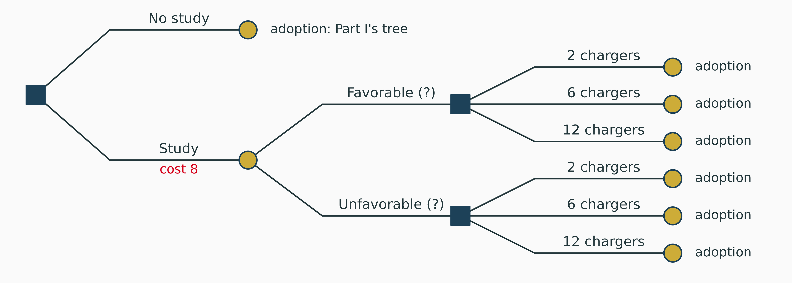
Decide on the study, see the report, then decide on the chargers, then learn the adoption.
The branches after the report need two kinds of probability:
The consultant gave neither. She gave \(P(\text{report} \mid \text{state})\), the reliability of the study, the wrong way round for the tree.
Bayes’ rule turns it around
Prior \(P(\text{state})\) plus reliability \(P(\text{report} \mid \text{state})\) give the posterior \(P(\text{state} \mid \text{report})\).
Picture 1,000 plazas like this one. The prior says 300 face slow adoption, 500 moderate and 200 fast. The study’s track record says how many of each get a Favorable report.
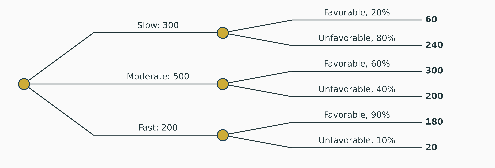
540 Favorable reports
\(60 + 300 + 180 = 540\) of the 1,000
460 Unfavorable reports
\(240 + 200 + 20 = 460\) of the 1,000
A Favorable report raises P(fast) from 0.2 to 0.333. An Unfavorable one cuts it to 0.043.
Use counts to check the formula
On the exam, write the formula. Then check the posterior by imagining 1,000 cases.
For state \(s_i\) and report \(R\):
\[ P(s_i \mid R) = \frac{P(R \mid s_i)\, P(s_i)}{\sum_k P(R \mid s_k)\, P(s_k)} \]
The counting slide did exactly this, with 1,000 in place of 1.
Multiply across, add down, divide by the total.
| State | Prior | P(F | state) | Joint | Posterior P(state | F) |
|---|---|---|---|---|
| Slow | 0.3 | 0.2 | 0.06 | 0.06 / 0.54 = 0.111 |
| Moderate | 0.5 | 0.6 | 0.30 | 0.30 / 0.54 = 0.556 |
| Fast | 0.2 | 0.9 | 0.18 | 0.18 / 0.54 = 0.333 |
| Total: P(F) | 1 | 0.54 | 1.000 |
\(P(U \mid \text{state}) = 1 - P(F \mid \text{state})\):
| State | Prior | P(U | state) | Joint | Posterior P(state | U) |
|---|---|---|---|---|
| Slow | 0.3 | 0.8 | 0.24 | 0.24 / 0.46 = 0.522 |
| Moderate | 0.5 | 0.4 | 0.20 | 0.20 / 0.46 = 0.435 |
| Fast | 0.2 | 0.1 | 0.02 | 0.02 / 0.46 = 0.043 |
| Total: P(U) | 1 | 0.46 | 1.000 |
Check: \(P(F) + P(U) = 0.54 + 0.46 = 1\).
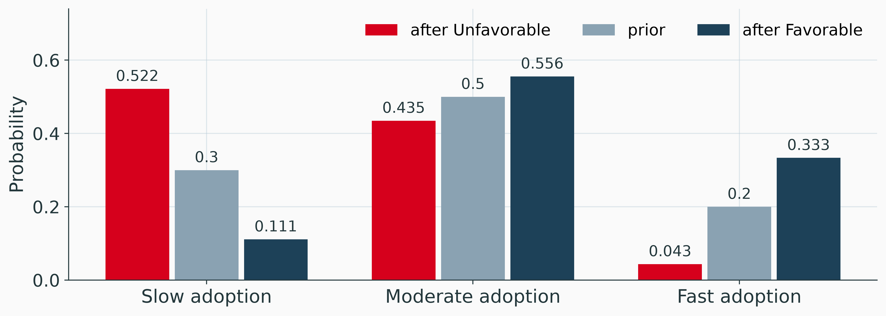
The report moves the probability toward the states that tend to produce it.
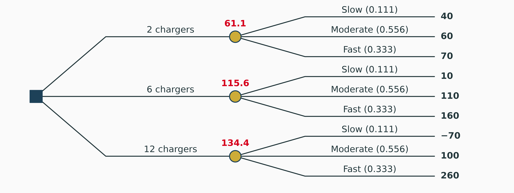
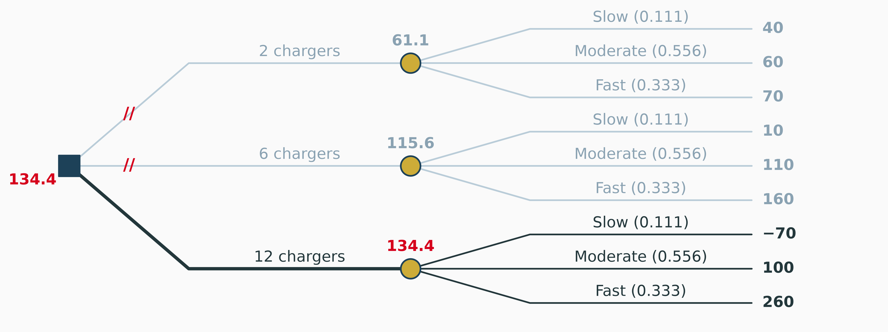
12 chargers: \(0.111(-70) + 0.556(100) + 0.333(260) = 134.4\). After a Favorable report, install 12.
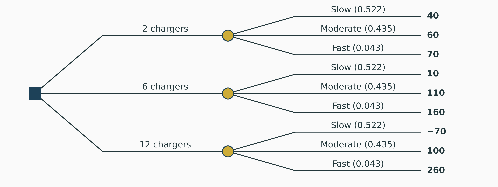
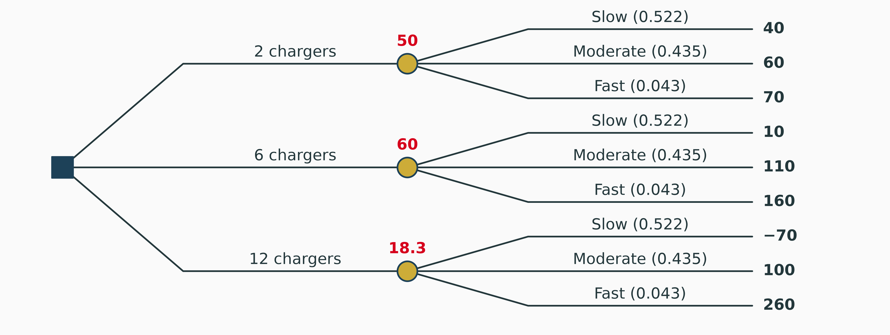
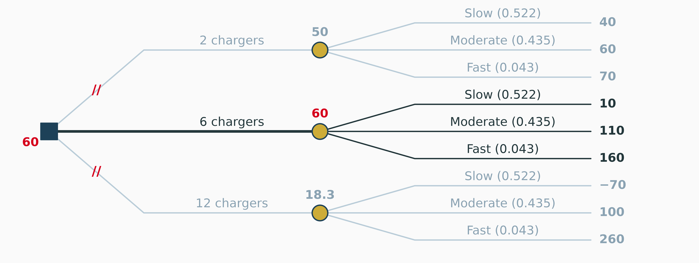
6 chargers: \(0.522(10) + 0.435(110) + 0.043(160) = 60.0\). After an Unfavorable report, install 6.
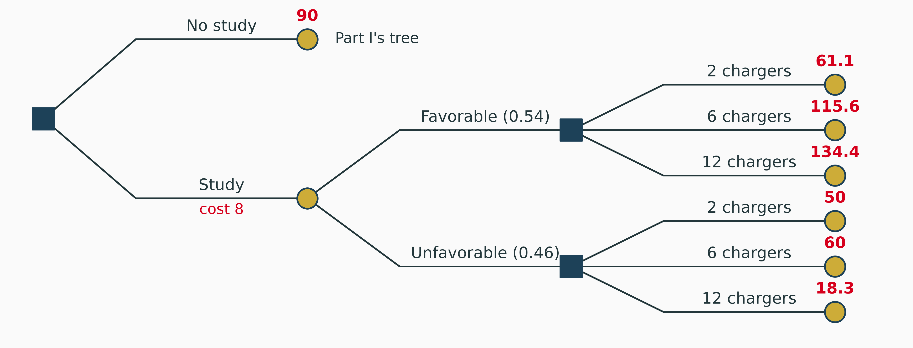
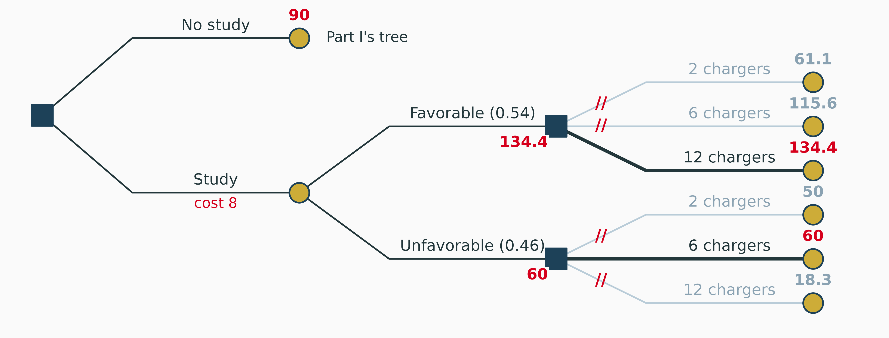
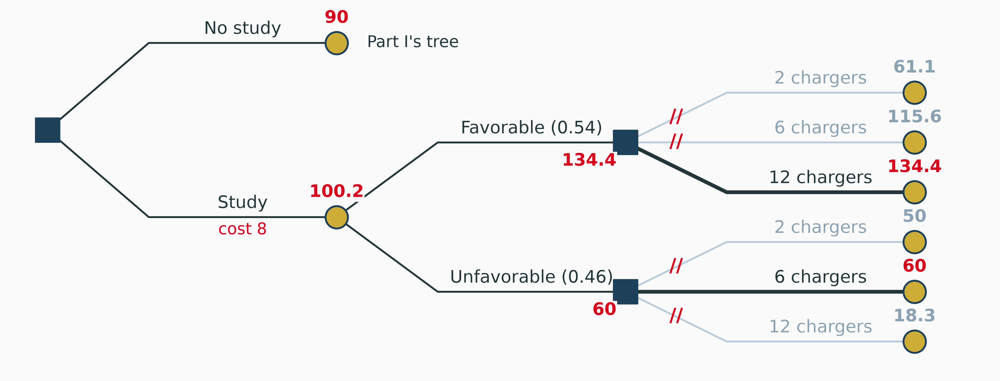
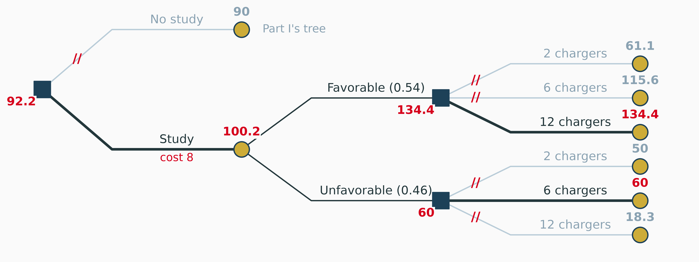
Study: \(0.54(134.4) + 0.46(60.0) = 100.2\), less its cost: \(100.2 - 8 = 92.2 > 90\).
A tree’s answer is a strategy: what to do now, and what to do after each thing you might learn.
| Report | Probability | Install | EV given the report |
|---|---|---|---|
| Favorable | 0.54 | 12 chargers | 134.4 |
| Unfavorable | 0.46 | 6 chargers | 60.0 |
Buy the study
Then install 12 chargers on a Favorable report and 6 on an Unfavorable one. Expected value 92.2 a year after the study’s cost, against 90 without it.
The expected value of sample information (EVSI) is what the imperfect study adds:
\[ \begin{aligned} EVSI &= EV \text{ with the study} - EV \text{ without it} = 100.2 - 90 = \textcolor{#D6001C}{\mathbf{10.2}} \\[4pt] \text{Efficiency} &= \frac{EVSI}{EVPI} = \frac{10.2}{29} = 35\% \end{aligned} \]
Suppose a weaker study said Favorable to 50%, 60% and 70% of slow, moderate and fast corridors.
| Report | Probability | EV, 6 chargers | EV, 12 chargers | Install |
|---|---|---|---|---|
| Favorable | 0.59 | 96.4 | 94.7 | 6 |
| Unfavorable | 0.41 | 80.7 | 61.2 | 6 |
EVSI = 0
Both reports lead to 6 chargers, the choice without the study. A report that cannot change what you do is worth nothing to this decision, however accurate it sounds.
Two common errors
Compare EVSI with the cost, or compare 92.2 with 90. Both say buy, by 2.2.
Download Decision_Analysis.xlsx and open the Study sheet
The study’s reliability is an input in C7:C9 and its cost in B4. The Bayes table (joints, P(F), P(U), posteriors) is A6:H10; EV after each report is B13:C15 and the decision after each report row 17. EVSI is B22, efficiency B24 and the gain from buying B26.
Try this
Replace the consultant with a machine-learning model that predicts Favorable or Unfavorable from traffic counts and electric-vehicle registrations. Its confusion matrix on 1,000 past plazas:
| Actual adoption | Predicted Favorable | Predicted Unfavorable | Total |
|---|---|---|---|
| Slow | 60 | 240 | 300 |
| Moderate | 300 | 200 | 500 |
| Fast | 180 | 20 | 200 |
Price a model by the decision it changes
Dividing each column by its total gives the posteriors only if the test plazas have the same mix as the prior. Use the rows, then Bayes.
Not on Exam 2
The plaza can insure its charger transformer. A failure costs $400,000 and happens with probability 0.01 a year. The premium is $12,000.
| $000 a year | No failure (0.99) | Failure (0.01) | EV |
|---|---|---|---|
| Insure | −12 | −12 | −12 |
| Do not insure | 0 | −400 | −4 |
Expected value says do not insure. Almost every business insures.
Utility
A utility function \(u(x)\) measures what money is worth to the decision maker. A risk-averse one is concave: losing $400,000 hurts more than 400 times losing $1,000.
Not on Exam 2
\(u(x) = 1 - e^{-x/R}\), risk tolerance \(R = 100\) ($000).
Certainty equivalent (CE): the sure amount with the same expected utility as the gamble.
After a Favorable report:
| EV | CE | |
|---|---|---|
| 2 chargers | 61.1 | 60.7 |
| 6 chargers | 115.6 | 104.2 |
| 12 chargers | 134.4 | 79.2 |
EV picks 12; this owner picks 6. She also insures: not insuring has \(CE = -42.9\), below the \(-12\) premium.
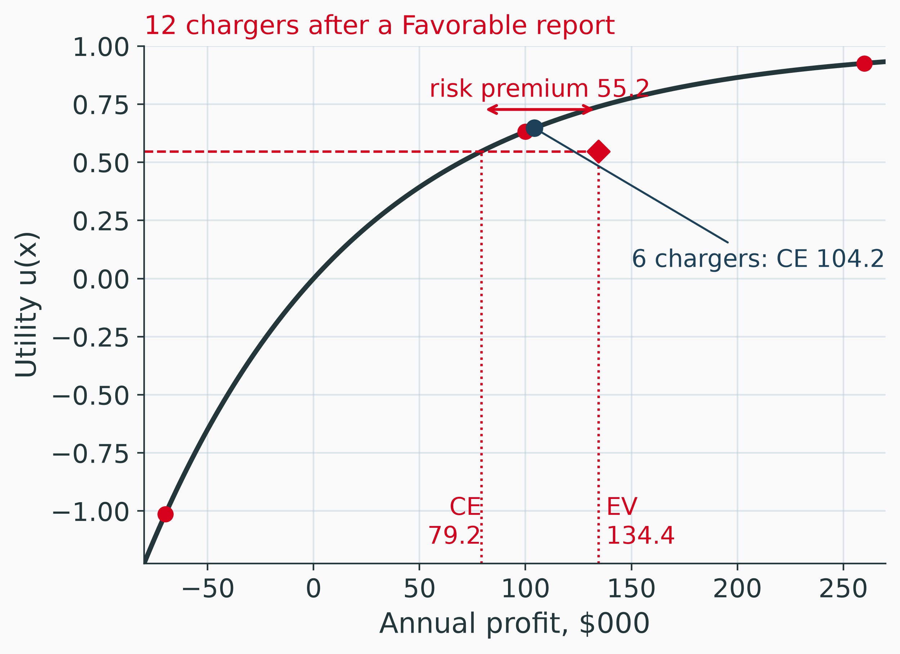
A second site
The owner will open a café at a second plaza and must build it small or large. Demand will be low (probability 0.45) or high (0.55). Net present value, $000:
A breakfast test
The coffee counter can test a new breakfast menu at one store before launching it. The menu succeeds with probability 0.4. The test comes back positive for 80% of menus that go on to succeed and for 30% of menus that fail.
Core takeaways
Watch out for
Bottom line
Buy the study. Install 12 chargers on a Favorable report and 6 on an Unfavorable one.
The criteria, trees and the value of information follow Clemen and Reilly (2014) (chapters 3, 4, 7 and 12) and Raiffa (1968); Howard (1988) on the practice. Natural frequencies: Gigerenzer and Hoffrage (1995).
Decision Analysis